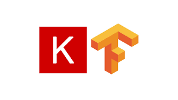
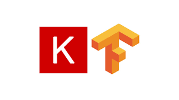

Anderson Ho Yong Kian
Penultimate Full-Time Human Resource Management Undergraduate in SUSS
Budding Tech & A.I enthusiast and programmer with an ever growing interest in a myriad of IT fields such as robotic process automation, data science, machine learning, deep learning and both front and backend web development. I enjoy being able to solve complex multifaceted problems faced by organisations today using different programming tools.
 
